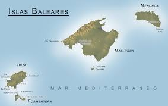
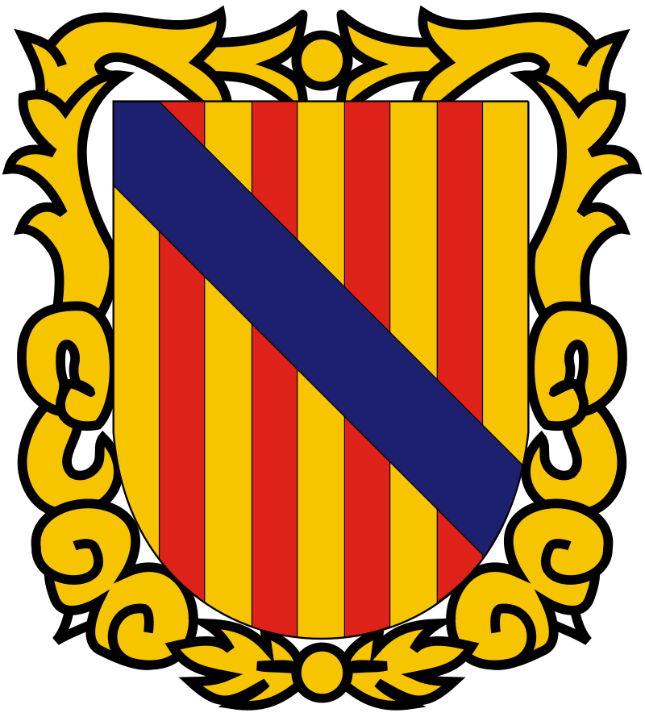

bienvenidos
En esta pagina os informaremos de algunos de los descubrimientos arqueologicos en LAS ISLAS BALEARES
un poco de contexto
las islas baleares son un archipiélago del Mediterráneo occidental, formado por cuatro grandes islas ( Mallorca , Menorca , Ibiza y Formentera ) y varios islotes . Son reconocidas como nacionalidad histórica y constituidas actualmente como comunidad autónoma de España . Es uno de los territorios pertenecientes a los Países Catalanes . Con 1.171.543 de habitantes distribuidos entre mallorquines , menorquines , ibicencos y formenterenses , las Islas Baleares representan el 7,7% de la población total de los Países Catalanes (y casi 2,5% de la España). Es una delimitación basada en la similitud lingüística (nunca existió como sujeto político) aunque la comunidad de territorios catalanohablantes tiene su origen histórico en la expansión de la Corona de Aragón .
- 

bandera de las islas baleares- 
escudo de las islas baleares